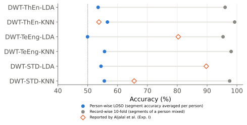
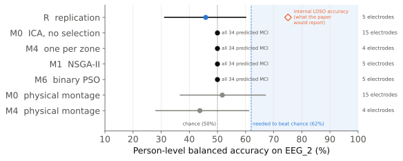
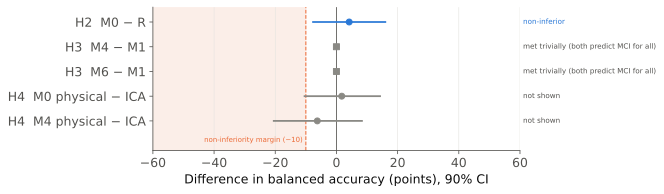
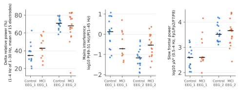
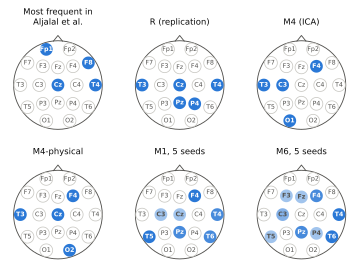

Preregistered on OSF
Preregistered on OSF1 · Background
- MCI often precedes dementia. Resting EEG is cheap and portable; a device with few electrodes would ease screening.
- Aljalal et al. (2024, Sci Rep) reported up to 95% accuracy with 5–7 electrodes chosen by NSGA-II, in 24 people, with LOSO validation.
- But electrodes were chosen and evaluated on the same people, no code was released and there was no external test.
2 · Question
Does that 95% describe how the method would work on new people, or how well it fitted the 24 it already had?
Data (public, Isfahan)
| EEG_1 | EEG_2 | |
| Role | development | single test |
| People | 24 (11 MCI) | 34 (18 MCI) |
| Equipment | 19 channels, 256 Hz | same |
| Analysed | first 10 min | first 10 min |
3 · Design
EEG_1 · 24 peopleindependent Python replication + diagnostic controls
↓
Freeze 5 methodsR (replication) · M0 · M4 · M1 · M6 + physical montage
↓
OSF preregistrationhypotheses, decision rules, SHA-256 of code and data
↓
EEG_2 · 34 peoplesame centre and equipment; single test, no tuning
4 · Methods compared
| R | Paper replication: DWT + entropy, 19 channels, NSGA-II, highest-accuracy rule |
| M0 | ICA-cleaned EEG, no Fp1/Fp2/F7/F8, relative band power, regularised LDA |
| M4 | As M0, one electrode per zone (exhaustive search, 180 combinations) |
| M1 | As M0, NSGA-II with the paper's rule (5 seeds) |
| M6 | As M0, binary PSO penalising each electrode (5 seeds) |
| Physical | M0 and M4 without average reference or ICA: real electrodes |
5 · Development: where high figures come from

- Segment leakage: person-wise, 50–57%; mixing segments of the same person, 90–99%. The paper's 89.7% matches our mixed 89.8%.
- Selection bias: NSGA-II reaches 72–79% with random labels.
- Eyes: Fp1 and F8, among the paper's most selected, carry 68% and 39% ocular signal.
6 · Preregistered external test

The replication had 75.1% internally and scored 45.8% on new people. The other four methods classified all 34 people as MCI.
7 · Hypotheses
| H1 | Replication falls below its internal accuracy | Supported |
| H2 | M0 not inferior to the replication | Trivial |
| H3 | M4/M6 not inferior to M1 with fewer electrodes | Trivial / no |
| H4 | Physical montage not inferior to ICA | Inconclusive |
“Trivial”: met by the rule, but both methods predict MCI for everyone, so it does not show that they work.

8 · Why did they fail?

- Both datasets come from the same centre, but EEG_2 is delta-dominated (69% vs 40%). Since MCI had slightly more delta in EEG_1, the models send everyone to MCI.
- Mains interference (50 Hz) is associated with the diagnosis in opposite directions in each dataset: an acquisition confounder.
- Neither the AUC (0.40–0.52) nor standardising each dataset separately revealed a signal.
9 · Selected electrodes

Stable across seeds, but useless on new people: stability is not validity.
10 · Conclusions
- The reported accuracies do not transfer to new people.
- Dataset shift and acquisition confounders outweigh the MCI signal.
- Minimising electrodes only makes sense after showing that the signal generalises.
11 · Minimum protocol we propose
Evaluate by person, never by segment
Nested selection inside validation
Compare against shuffled labels
Report AUC as well as accuracy
Check eyes and mains noise by group
Report the physical montage
Test whether datasets can be told apart
Preregister a single external test
Limitations: small samples (power 0.84 only if true accuracy were 70%); identical criteria for EEG_2 could not be verified; we tested the paper's best channel-selection configuration, not all.